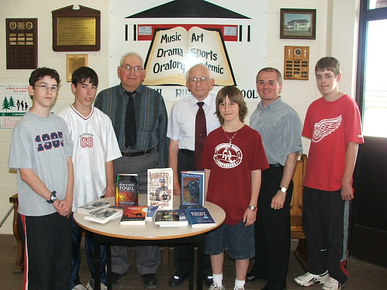

The Family Chronicle
No. 101 August 22, 2005

Readers may remember that the Glendenning Family established a Fund, as part of their family reunion activities in 2000. Grants from the Fund may be made for any charitable purpose reflecting a Black River theme. The first grant was made to Barry MacKenzie for an essay on “The MacKenzie Settlement and Klondike Will’. A prize also went to Justin Morris for an essay on St. Stephen’s United Church.
The second grant from The Glendenning Fund was made recently to the Miramichi Rural School for the purchase of library books. The project was designed to maximize participation of students in the process including deciding on books to be purchased and, thanks to efforts of Loisanne (Glendenning) Gregan, actually visiting a bookstore to make the purchases. The above photo shows members of the Glendenning Family and participants in the project along with books purchased. Starting on the left are Caleb MacDonald, Christopher Sippley, Norman Glendenning, Kenneth Glendenning, Bryce MacDonald, Andrew Clarke (Principal) and Lucas Smith. (Photo Loisanne 2005)
Fall preserving
As I was picking beans today, I thought about the preserving of fruit and vegetables at home. Cucumber pickles, chow and peaches went into bottles. Apple and crab apple jelly was also preserved in bottles. I really do not know the recipes or the process but I recall in the making of crab-apple jelly, the pulp from the apples and crabs being placed in a cotton cloth, (the corner of a flour bag perhaps?) and the juice dripping into the bottles.
On a few occasions I recall apples being dried in the big bedroom next to the driveway. The apples were peeled and cored then cut into one-quarter inches thick (like a flat donut. The “donuts” were strung on string, which was hung across the room to dry.
Later, during the war, I think, we got a canning machine, which allowed vegetables, peas, beans, blueberries to be canned in a safe way. Peas were taken from the pods, beans were “snapped” ends removed and broken into pieces about an inch long, the washed. Beans were blanched but I am not sure about peas. Blanching was accomplished by cooking them for a couple of minutes in boiling water; then they were rinsed in cold water.
Cans were bought by the box (48?) and could be lined (a gold colour inside) or unlined. I think that we always used lined cans; they were supposed to be safer. Some food items could not be preserved in unlined cans. Covers were purchased separately. The canner rotated the can and put increasing pressure on the lid so that the can and the lid were sealed together.
In preparation for cooking, a large pot, perhaps the bottom half of a barrel, was filled with water and a fire was build under it in the yard. When the water was boiling, the cans were placed gently into the boiling water and boiled for a couple of hours. After boiling, the cans were lifted out and cooled quickly in cold water in another tub, a wash tub as I recall.. When they were cooking, both ends bulged; after cooking and cooling, the ends snapped back. When cooled, cans were inspected. If any still bulged, they were opened and eaten for supper.
Cans were stored on a shelf in the basement and used throughout the winter. If a can was found to have bulging ends, it was thrown away because of likely spoilage.
Home canned fruit and vegetables were sometimes included in packages sent to soldiers overseas.
I do not remember the Italian Air fleet visiting Shediac (reported in the Chatham Gazette on Friday, July 14, 1933) but I remember seeing photos in Life Magazine (Who remembers Life Magazine?) of several Italian commercial flying boats in the harbour at Shediac, N.B. Apparently Shediac was a refueling stop on the flight from the USA to Italy.
On October 22, 1933, Rev. J. I Morrison, Minister of St. Stephens United Church, had an accident while driving to Hardwicke for a church service. While driving his car across the Little Branch Bridge, something happened to the steering gear causing his car to clip four posts and end up with the front immersed in the Little Branch River. Fortunately, Rev. Morrison was not injured. (Chatham Gazette)
The Chatham Gazette of Monday, September 12, 1932 carried the following news item
Fire Destroys Black River
Bdge Barn & Contents E.
A. Glendenning of that Place Loses Building, Hay, New Seeder and
Plough ---------------- Another
serious fire broke out at Black river Bridge, early Saturday
morning when a barn belonging to E. A. Glendenning was burned to
the ground with its contents. In the
barn at the time were a new seeder and a plough, as well as several
tons of hay, so that the loss is a serious one. The barn was
situated about a mile and a half from Mr. Glendenning’s home and
the fire was first noticed by neighbours about two o’clock in the
morning when they spread the alarm.
While I do not remember the fire, I do remember picking up burnt and bent nails and straightening them for use later.
The Chronicle is an occasional newsletter published by Don Glendenning and posted on the family website. It is intended to share information about my family, community and the times in which I grew up. While every effort is made to be accurate, errors are likely to occur. Comments, enquiries and information may be sent to 62 Queen Elizabeth Drive, Charlottetown, PEI, C1A 3A9. Tel: 902 892 5859. Email: dglende@auracom.com Web: www.glendenning.net/don